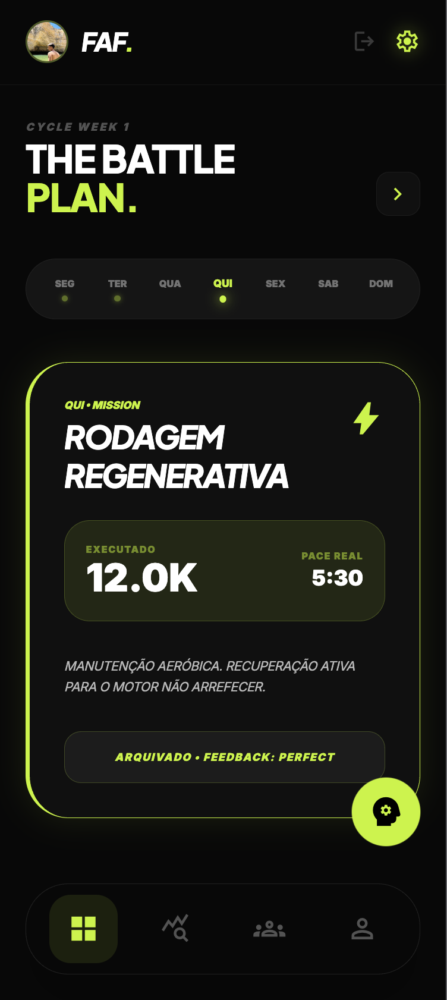
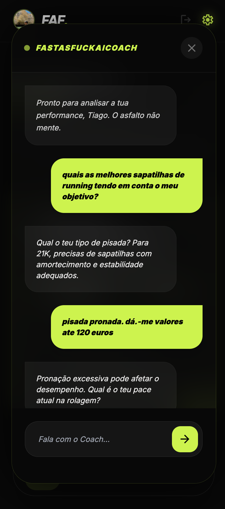

FAST AS
FUCK.
O único treinador que descodifica a tua fisiologia real e ajusta o plano de forma dinâmica


Adaptatividade Total
Fumador ativo? Stress alto? O FAF recalcula os teus paces baseando-se no teu feedback biométrico diário.
FastAsFuck AI Coach
Uma rede neural que analisa os teus paces reais e decide se o plano deve ser castigado ou suavizado.
Plano Vivo.
O FAF não é uma tabela fixa. É um ciclo de feedback constante entre o asfalto e o algoritmo.
Input de Dados Reais
Regista os teus KM e Pace após cada missão. O sistema descarta o planeado e abraça o executado.
Análise de Tendência
Se marcares "Fácil" ou "Difícil" consecutivamente, o motor recalibra todos os teus paces futuros automaticamente.

Bio-Sincronização.

Neural Coach AI
Esquece os planos estáticos. Fala com a IA. Ela sabe se o teu peso mudou, se o teu último treino foi elite e ajusta a carga de amanhã em segundos.
- check_circle Ajuste Dinâmico de Pace
- check_circle Reagendamento Inteligente